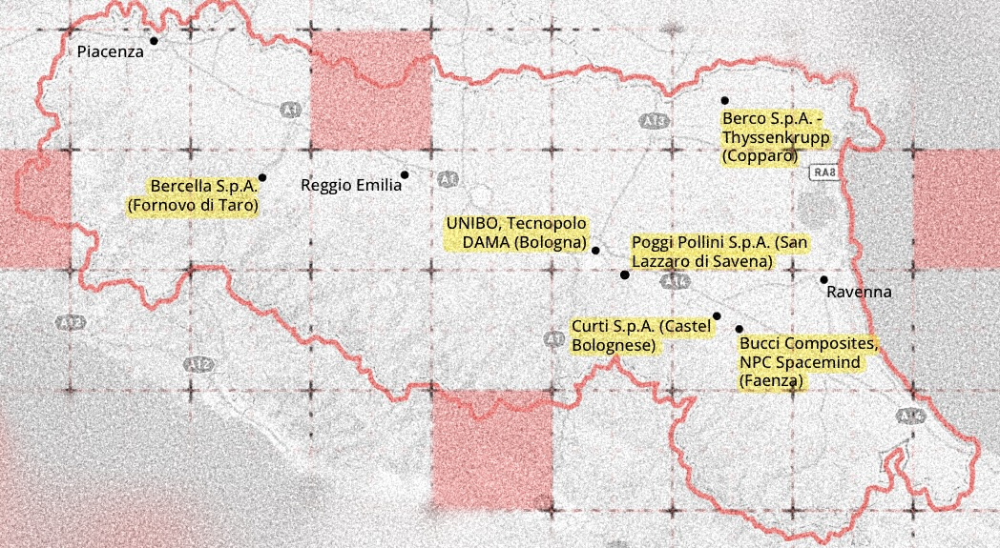

Il "modello Emilia" e la fabbrica della guerra

Introduzione
Con questo articolo vogliamo dare un contributo iniziale, insufficiente e del tutto provvisorio, a un metodo. Un metodo inattuale, e per questo necessario, di cui i militanti politici si sono sempre serviti: quello dell’inchiesta. L’inchiesta ha sempre un suo spazio ed un suo tempo. La nostra è definita dall’ambito regionale in cui essa avviene, cioè in Emilia-Romagna, la regione in cui viviamo, e si verifica durante il generale processo di corsa al riarmo e la conseguente riconversione bellica dell’industria in «fabbrica della guerra» (Kamo Modena, 2025).
La scelta di questa lente non è casuale, ed ha infatti per noi un preciso significato analitico e politico al tempo stesso. Per quanto riguarda il livello dell’analisi, concepiamo infatti la nostra ricerca come nient’altro che una delle tante tessere da inserire in un mosaico, le quali – nelle loro innumerevoli sfaccettature e infinitesità – possono però restituire pezzi di complessità forse più nitidamente di quanto possa fare una visione immaginifica e arroccata nell’alto dei macro-processi. Dal punto di vista politico procediamo invece intensivamente, dalla dimensione che si dà a noi quando usciamo dalla porta di casa, nel tentare di guadagnarci uno sguardo che dall’hyperlocale sappia proiettarsi all’avanguardia dei processi socio-politici; ne sappia cioè cogliere la tendenza senza rinunciare al medio raggio della costruzione di una prassi politica. In questo senso, i compagni del collettivo Kamo Modena hanno intrapreso un importante lavoro d’inchiesta di cui questo articolo è fortemente debitore.
Il “Modello Emilia” nella fabbrica della guerra
Per “Modello Emilia” si intende una gestione complessiva del territorio che emerge dall’interazione dinamica tra struttura produttiva, mercato del lavoro e istituzioni politiche locali (Brusco, 1982). Per orientarci, possiamo prendere a riferimento la data del discorso di Togliatti a Reggio Emilia del 24 settembre 1946, Ceto medio e Emilia rossa1. Togliatti, dopo aver sottolineato il carattere composito e non uniformabile delle figure appartenenti alla categoria “ceto medio”, rivendica la necessità del Partito di mantenere salda l’alleanza con quei “gruppi intermedi” e la classe operaia in funzione del più complessivo «nuovo corso» riguardante il processo di ricostruzione dell’Italia antifascista. Si pongono così le premesse teoriche per un’alleanza strategica tra classe operaia e ceti medi produttivi che strutturerà il modello emiliano per oltre trent’anni.
Nel 1970, il giornale di Potere Operaio pubblica tra le sue pagine l’articolo La classe operaia emiliana di fronte al problema dell’organizzazione, in cui si dà conto della struttura produttiva emiliana. Essa sarebbe sostanzialmente decentrata e formata prevalentemente da piccole e medie imprese (91,84% di tutte le imprese sono aziende fino a 10 addetti) a struttura artigianale. Il processo di sviluppo di questo indotto, prevalentemente meccanico e trainato dall’aumento della produttività agricola, si giova dello sfruttamento della mobilità della forza lavoro espulsa dall’agricoltura. La nuova forma di organizzazione della produzione che emergerà a partire dalla fine degli anni Settanta sarà quella del distretto industriale: «un’entità socio-economica caratterizzata dalla compresenza attiva, in un’area territoriale circoscritta, naturalisticamente e storicamente determinata, di una comunità di persone e di una popolazione di imprese industriali» (Beccattini, 1989, p. 401). L’avvento e la permanenza dei distretti industriali sono legati alla capacità di quest’ultima forma del sistema produttivo di organizzare le singole imprese che ne fanno parte e di consolidare, a livello di indotto, una rete stabile di relazioni con i mercati finali.
Attraverso questo processo, alla fine degli anni Novanta, si affermano nei distretti le cosiddette imprese leader, aziende sorte solitamente a seguito di acquisizioni e fusioni aziendali (intra ed extra-regionali) capaci di guidare strategicamente l’organizzazione della produzione attraverso l’assemblaggio e la customizzazione di diverse reti di subforniture specifiche e di fornire accesso ai mercati internazionali (Rinaldi, 2012). Oggi, nonostante la crisi in Medio Oriente abbia fatto registrare una crescita dei prezzi internazionali di alcune commodites chiave per la filiera della meccanica, in particolare quelli di metalli e minerali, secondo i dati di Confartigianato (2026) «l’Emilia-Romagna è la seconda regione per valore delle esportazioni di prodotti della meccanica, pari a 40,8 miliardi di euro negli ultimi 12 mesi, dietro solo alla Lombardia»2. Si conferma in crescita il mercato tedesco, secondo principale paese partner dopo gli Stati Uniti. Positivo sia l’export di macchinari (+9,7%) che autoveicoli (+1,9%) verso i partner d’oltralpe.
I dati dimostrano quindi una sostanziale dipendenza, a livello di subfornitura e supply-chain, dell’apparato produttivo emiliano dal ciclo industriale tedesco. In aggiunta a ciò, non dobbiamo dimenticarci anche l’acquisizione diretta, cioè a livello proprietario, di importanti aziende del territorio come Lamborghini, Ducati e Berco S.p.A. da parte di colossi tedeschi come Audi (Volkswagen Group) e ThyssenKrupp. Da queste premesse risulta evidente come la riconversione dell’automotive tedesco in comparto bellico/dual use determinerà lo stesso tipo di tendenza anche per quelle aziende emiliane coinvolte nell’indotto produttivo delle supply chain dell’industria meccanica e manifatturiera tedesca.
Questa almeno è una prima ipotesi da verificare.
Gli attori dell’ecosistema emiliano e “la foglia di fico” dell’aerospazio
Quali sono gli assi attraverso cui si sta strutturando la riconversione dell’indotto produttivo emiliano? Ciò che sembra emergere dallo studio delle aziende analizzate è che spesso i progetti dual use vengono camuffati e resi appetibili attraverso la categoria dell’aerospazio. Un esempio è ANSER (AeroNautics and Space in Emilia-Romagna), il consorzio privato promosso da Regione Emilia-Romagna e Confindustria Emilia-Romagna composto e finanziato da imprese del territorio quali Bercella S.p.A., Bucci Composites S.r.l., Curti S.p.A., NPC Spacemind S.r.l. e Poggipollini S.p.A. Una rapida passata in rassegna di alcune delle più significative imprese tra quelle citate è sufficiente a specificare a che tipo di aziende ci stiamo riferendo.
La Curti S.p.A., azienda di Castelbolognese nata negli anni ’60 con la produzione di macchine tessili e agricole, è capofila del consorzio ANSER nelle vesti del suo a.d. Alessandro Curti, Presidente del consorzio fin dalla sua nascita. Specializzata nella saldatura di acciaio balistico e nei componenti per elicotteri, Curti è tra i fornitori di fiducia di Leonardo per la divisione Helicopter. Partecipa inoltre alla progettazione di droni militari e tecnologie per sistemi navali e subacquei per l’esercito italiano (progetto Amus e Proteus)3 e, tramite la controllata NPC (partecipata al 40% da Ecor e al 40% da Curti) sviluppa con Spacemind nanosatelliti per usi civili e militari, tra cui il progetto militare Idra.
La Poggipollini S.p.A., storica azienda di San Lazzaro di Savena specializzata in sistemi di fissaggio e componenti meccanici in titanio, fornitrice di Ducati e Ferrari. Dal 2010 ha progressivamente lasciato la Formula 1 per concentrarsi sui settori aerospaziale e della difesa, fornendo Leonardo Helicopters, Boeing e Airbus. Nel 2024 ha acquisito la texana Houston Precision Fasteners (Hpf)4, entrando nella filiera di gruppi globali come Lockheed Martin, Bombardier Aerospace, Northrop Grumman, Space X e Blue Origin (Maggiori, 2025).
Entrambe le aziende sono state insignite del premio Leonardo Supplier Award conferiti dalla Leonardo S.p.A. per «valorizzare i fornitori chiave che si sono distinti per l’impegno verso l’eccellenza, lo spirito di collaborazione ed i risultati raggiunti5». Insomma, ad un’analisi minimamente approfondita risulta chiaro come la categoria di aerospazio sia oggi la foglia di fico dietro alla quale si sta progressivamente strutturando la riconversione dell’indotto emiliano in industria bellica. Attraverso consorzi come ANSER e il contributo di due attori fondamentali come UNIBO e DAMA (Tecnopolo Data Manifattura Emilia-Romagna), la regione si sta velocemente proiettando all’avanguardia dei processi di ristrutturazione industriale attraverso quello che, nelle parole del Presidente di Regione De Pascale, è «un ecosistema già consolidato, che comprende “il sistema del supercalcolo, l’intelligenza artificiale, i tecnopoli e il trasferimento tecnologico, ma anche le imprese”»6. All’interno di questo quadro, vale la pena spendere due parole finali sull’Università di Bologna che, con i suoi CIRI (Centri Interdipartimentali di Ricerca Industriale), rappresenta un tassello fondamentale dell’ecosistema della regione. UNIBO ha infatti accordi quadro con molte PMI (piccole medie imprese) del territorio, oltre a partnership consolidate con colossi come Eni e Hera e LegaCoop. Tra queste, spicca un accordo quadro7 stipulato nel 2020 con la Bucci Industries Group di Faenza, azienda leader nella progettazione e produzione di parti strutturali e componenti in materiale composito avanzato per i settori automotive, aerospace, marine, industriale.
Conclusioni
La mappatura qui proposta ha tentato a partire da una prospettiva genealogica di gettare le prime tracce di un’inchiesta “oggettiva” sulle attuali trasformazioni del territorio e le tendenze che si stanno prefigurando. In poche parole, su quelli che potremmo definire i progetti del capitale. Se è vero che la nostra inchiesta riguarda un ambito regionale geograficamente circoscritto, è altrettanto significativo notare che dall’analisi delle aziende “sotto casa” ci si possa immediatamente proiettare nell’intrigo del mercato mondiale. I progetti, tuttavia, per funzionare (ma anche per incepparsi) hanno bisogno di braccia, gambe e menti; necessitano cioè di soggetti. Nelle prossime fasi dell’inchiesta sarà quindi essenziale rivolgere il nostro sguardo e le nostre domande ai lavoratori del «segreto laboratorio della produzione» emiliana .
Bibliografia
Becattini, G. (1989). Piccole e medie imprese e distretti industriali nel recente sviluppo italiano. Note economiche, vol. XXII, n. 3, pp. 397-411.
Brusco, S. (1982). The Emilian Model: Productive Decentralisation and Social Integration. Cambridge Journal of Economics, Cambridge Political Economy Society, vol. 6(2), pp. 167-184.
Kamo Modena (2025). Il laboratorio della guerra. Tracce per un’inchiesta sull’università dentro la «fabbrica della guerra» di Modena. https://kamomodena.nublogs.org/index.html%3Fp=638.html
Maggiori, L. (2025). Le catene della guerra in Italia. I fornitori in Emilia-Romagna. Pressenza - International Press Agency. https://www.agoravox.it/Le-catene-della-guerra-in-Italia-I.html (consultato in data 30/09/2026).
Potere Operaio. (1970). La classe operaia emiliana di fronte al problema dell’organizzazione. Anno II, n. 13, p. 4.
Rinaldi, A. (2012). Il sistema delle piccole e medie imprese e il “modello Emilia”. Dipartimento di Economia Politica, Università di Modena e Reggio Emilia.
Togliatti, P. (1974) Politica nazionale e Emilia rossa. Editori Riuniti, Roma.
-
(P. Togliatti, Politica nazionale e Emilia rossa, Editori Riuniti, Roma 1974). ↩︎
-
https://www.confartigianato-er.it/congiuntura-economica-meccanica-emilia-romagna-focus-centro-studi-confartigianato/ ↩︎
-
https://www.confindustriaemilia.it/flex/cm/pages/ServeBLOB.php/L/IT/IDPagina/103199 ↩︎
-
https://www.leonardo.com/it/news-and-stories-detail/-/detail/leonardo_supplier_awards_2022_winners ↩︎
-
https://www.adnkronos.com/economia/de-pascale-spazio-settore-che-apre-allemilia-romagna-un-filone-industriale-nuovo-e-strategico_2IQZbwwSAFRH7MOpNoywvm ↩︎
-
https://magazine.unibo.it/it/articoli/universita-di-bologna-e-bucci-industries-group-firmano-un-nuovo-accordo-di-collaborazione ↩︎